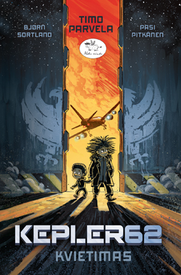

Kompiuteriniai žaidimai: pliusai ir minusai | PrieKavos.lt
2020.10.29 12:36

Kompiuteriniai žaidimai: pliusai ir minusai | PrieKavos.lt
Žurnalai
Home Sveikata ir grožis Stilius Grožis Sveikata Kūnui ir sielai Natūralioji medicina Natūrali medicina Žurnalas Be vaistų Vaistinėlė Kitu kampu Ekologija Būrėja Būrėja Žurnalas Psichologijos magija Žurnalas Kitas žvilgsnis Paslapčių skrynia Praktinė magija Tarp realybės ir fantazijos Skanaus Sveika ir skanu Salotos Užkandžiai Sriubos Karšti patiekalai Magiški patiekalai Desertai Gėrimai Viskas apie TV naujienos Įdomu Istorijos Įdomybės Kelionės Legendos Pažintys Patarimai Mano patarimai Žurnalas Gyvūnai Psichologija Rankdarbiai Vaikai S Įdomu > Įdomybės | Istorijos | Kelionės | Legendos | PažintysKompiuteriniai žaidimai: pliusai ir minusai
2016-07-27 14:53Ar žaisti kompiuterinius žaidimus yra gerai ar blogai? Atsakymas priklauso nuo to, iš kurios pusės pažiūrėsite Daugelis tėvų kompiuterinius žaidimus vadina laiko švaistymu ar net mano, kad jie gali neigiamai paveikti smegenis. Žiaurūs kompiuteriniai žaidimai, manoma, skatina antisocialų elgesį, brutalumą, puolimą į kraštutinumus. Tačiau daugelis mokslininkų ir psichologų yra įsitikinę, kad kompiuteriniai žaidimai turi ir begalę privalumų (pavyzdžiui, juos žaidžiantys vaikai gali tapti protingesni). Kompiuteriniai žaidimai lavina mažųjų mąstymą, kuris jiems pravers ateityje.
„Vaizdo žaidimai keičia jūsų smegenis“, sako Viskonsino universiteto psichologas C. Shawn Green. Žaidžiant pasikeičia smegenų fizinė struktūra, taip pat kaip mokantis skaityti, groti muzikos instrumentu ar orientuotis žemėlapiuose. Panašiai kaip fiziniai pratimai gali užauginti raumenis, taip ir kompiuteriniai žaidimai skatina tokias chemines reakcijas smegenyse, kurios padeda lavinti smegenis.
Kompiuterinių žaidimų privalumai:
Moko naudotis instrukcijomis. Lavina loginį mąstymą ir padeda priimti problemas. Gerina rankų ir akių koordinaciją, smulkiosios motorikos ir erdvinius įgūdžius. Padeda mokytis planuoti, moko valdyti išteklius ir logistikus. Padeda išmokti vienu metu atlikti kelis veiksmus, siekti skirtingų tikslų ir pastebėti skirtingus kintamuosius. Greitina mąstymą, moko greitai priimti sprendimus ir analizuoti situaciją. Skatina tikslumą. Skatina kurti strategijas ir numatyti įvykius. Gerina skaitymo ir matematinius įgūdžius. Skatina atkaklumą. Gerina atmintį ir dėmesio koncentraciją. Skatina nebijoti rizikuoti.
Kompiuterių žaidimų trūkumai:
Kompiuteriniai žaidimai prastą reputaciją pelnė labiausiai dėlto, kad jie gali skatinti agresiją ir žiaurų elgesį. Vaikai, kurie žaidžia žiaurius kompiuterinius žaidimus, yra labiau linkę į agresyvias mintis, jausmus ir elgesį, ir yra mažiau paslaugūs ir empatiški.
Daugelyje kompiuterinių žaidimų žaidėjai skatinami būti dar žiauresniais, nes interaktyviame pasaulyje už tai gaunama papildomų taškų. Žiaurūs veiksmai atliekami daug kartų iš eilės.
Labai dažnai žaidžiant kompiuterinius žaidimus, gresia socialinė izoliacija. Priklausomas nuo kompiuterinių žaidimų žmogus gali apsileisti, nustoti rūpintis savimi, savo sveikata ir buitimi. Dėlto gali nukentėti mokslai ir darbai.
Kai kurie kompiuteriniai žaidimai moko vaikus netinkamų vertybių. Skatinamas žiaurus elgesys, kerštas, agresija. Derėjimasis ar kitų, taikų problemų sprendimų būdų ieškojimas paprastai nėra būdinga kompiuteriniuose žaidimuose. Moterys dažniausiai vaizduojamos kaip silpnesni personažai, bejėgiai arba seksualiai provokuojantys. Kita vertus, Bafalo universiteto tyrėjai mano, kad žiaurumas ir blogas elgesys virtualiame pasaulyje gali padidinti norą gerai elgtis realiame pasaulyje. Teigiama, kad tokių žaidimų žaidėjai gali jausti kaltę dėl savo elgesio virtualiame pasaulyje ir dėlto jautriau reaguoti į moralės principus realiame pasaulyje.
Kompiuteriniai žaidimai gali supainioti realybe su fantazija.
Dažnai žaidžiant kompiuterinius žaidimus gali suprastėti akademiniai pasiekimai. Moksliniai tyrimai parodė, kad kuo daugiau laiko vaikai praleidžia žaisdami kompiuterinius žaidimus, tuo jų rezultatai mokykloje prastesni. Pastebėta, kad tokie vaikai labiau linkę ginčytis su mokytojais, konfliktuoti su draugais ir gauti mažesnius pažymius negu tie, kurie nežaidžia arba žaidžia kompiuterinius žaidimus rečiau. Kompiuterinių žaidimų mėgėjai neretai vengia daryti namų darbus, kad galėtų ilgiau pažaisti, tačiau dėlto prastėja jų rezultatai mokykloje.
Nors kai kurie tyrimai rodo, kad kompiuteriniai žaidimai gali pagerinti dėmesio koncentraciją, tačiau 2012 metų tyrimas moksliniame žurnale „Psychology of Popular Media Culture“ parodė, kad tokie žaidimai gali lemti vaiko dėmesio sutrikimų atsiradimą (jis iš tikrųjų gali mokėti geriau sukoncentruoti dėmesį trumpose užduotyse, tačiau susikaupti ilgam laikui jam gali tapti sunku).
Kompiuteriniai žaidimai gali turėti neigiamą įtaką vaikų sveikatai. Gali sukelti nutukimą, priepuolius, laikysenos, raumenų ir skeleto sutrikimus, pavyzdžiui, sausgyslių uždegimą, nervo užspaudimą, riešo kanalo sindromą.
Žaisdamas kompiuterinius žaidimus internete vaikas gali išmokti netinkamų žodžių ir blogų manierų iš kitų žmonių. Jis taip pat rizikuoja nukentėti nuo interneto sukčių.
Kompiuteriniai žaidimai gali sukelti priklausomybę. Tai gali sustiprinti depresiją ir nerimą. Priklausomi asmenys linkę turėti įvairių socialinių fobijų, kurios gali pakenkti socialiniam gyvenimui.
Kartais tėvai leidžia vaikams žaisti kompiuterinius žaidimus, kad jie pabūtų tyliai. Tačiau jiems iš tikrųjų reikia ne to. Vaikams reikia laiko svajonėms, reikia išmokti įveikti savo nerimą ir baimes, apgalvoti savo mintis ir pasidalinti jomis su tėvais, kurie turėtų juos palaikyti arba nukreipti tinkama linkme.
Jūsų komentaras (Komentarų nėra)
Prisijungti:
Connect with:Komentavimas negalimas.
Susiję straipsniai
Ką dėti po eglute?
Drakono statulėlė, saldainiai ar užrašų knygelė... Ar apie tai svajoja mūsų artimieji? Kaip neapsirikti renkant dovanas? Apima panika, kai reikia sugalvoti, ką padovanoti tėčiui ar vyro broliui? Sociologai tvirtina: daugiau nei 70 % apklaustųjų jaučia stresą sukdami galvas, ką padovanoti artimiesiem...
PlačiauPuansetija – Kalėdų žvaigždė
Kur tik eisite prieš šventes, pamatysite ryškiai raudonus puansetijos – Kalėdų žvaigždės – žiedus. Puansetija – turbūt pati populiariausia šv. Kalėdų gėlė visame pasaulyje. Kaip atsitiko, kad augalas iš Meksikos pakraščių tapo žiemos švenčių simboliu? Puansetijos (lot. k. Euphorbia Pulcherrima) isto...
PlačiauNatūralioji medicina
Putino uogos gali padėti nuo šimto ligų (+ receptas)
Kaip natūraliomis priemonėmis užkirsti kelią peršalimui?
Sveikatos problemos – ženklas iš aukščiau?
HOROSKOPAS
Sėkmingas laikas, jūsų nuotaika puiki, atsiras galimybių ištaisyti seną klaidą, susitaikyti su draugu ar mylimu žmogumi. Palanki proga nuoširdžiau pasikalbėti su vaikais, kurie jau paaugliai ar suaugę.
Nepriekabiaukite, nepykite, nepradėkite aiškintis santykių, kol dešimt kartų nepatikrinsite, ar esate teisūs. Būkite nuoširdesni su antrąja puse: jūsų santykiai gali vėl tapti puikūs, jei bent truputį pasistengsite ką nors nuveikti jos labui.
Ieškokite kompromiso, derėkitės, mokėkite laiku nusileisti, pasiūlyti ar sutikti. Orientuokitės į kitų interesus (svarbiausia – partnerių), jei norite, kad ši diena būti vaisinga ir smagi.
Susimąstymų diena. Ramybės (ar geros nuotaikos) vis dar stigs, tad mažiau galvokite apie tai, ko nenorite, kas nepatinka ar netinka, ko reikia atsisakyti, verčiau pasvajokite apie tai, ko jums išties reikia. Darykite tik tai, kas jums malonu ir nesunku.
Šiandien daug nenorėkite, būkite kuklesni ir rimtai pamąstykite, ko reikia jūsų artimiesiems, ko jie iš jūsų norėtų. Tai geras laikas užsiimti atidėtais, nebaigtais darbais ir netinkamas pradėti ką nors nauja.
Darbų krūvis nemenkas, bet jūs puikiai jį įveiksite. Tinka su vadovybe aptarti jūsų veiklos perspektyvas: šiandien suvoksite, kas jums svarbiausia. Gautais pasiūlymais galite tikėti.
Tai tinkamas metas imtis darbų, kuriems reikia įkvėpimo, kūrybingumo ir optimizmo. Dabar švytėsite ir sulauksite aplinkinių pagarbos, simpatijos ir palaikymo. Galite sulaukti įdomaus pasiūlymo, bet neskubėkite jo priimti.
Sąlyginai pasyvus metas, nieko naujo ir rimto nesiimkite. Tiesa, jums seksis: atsiras norinčių ir galinčių padėti. Stebėkite, kas vyksta, ir stenkitės kuo optimistiškiau tai vertinti. Skirkite šią dieną apmąstymams vienatvėje.
Gana sėkminga diena, jei tik reikalus tvarkysite vieni. Dabar esate energingi, sumanūs, veiklūs, aplinkiniams paliekate malonų įspūdį ir nejučiomis turite įtakos jų nuomonei, pasirinkimui. Šiuo metu nuo jūsų nemažai kas priklauso, tad bus taip, kaip norėsite.
Galima netikėta pagalba, nelaukta dovana: darbe būsite vertinami, jums pakaks dėmesio iš draugų, mylimo asmens. Ir jums pakaks sveiko proto, kad įvertintumėte ne tik savo asmeninius nuopelnus, bet ir tą gera, kurį gavote iš savo antrosios pusės, draugų, giminaičių, kolegų.
Mėginkite susitikti su žmonėmis, kurių ilgą laiką nepavyko pagauti, draugiškai pasikalbėkite, tiesiai, be užuolankų užduokite klausimus, dėl kurių jie mėgina išsisukti. Tik patys venkite daug žadėti, griežtai įsipareigoti.
Tinka tvarkyti namų, šeimos reikalus, tai bus sėkmingiau, nei užsiimti atsakingų profesinių problemų sprendimu. Neskubinkite įvykių, tai tam tikrų apribojimų laikas, kai geriau atsitraukti nuo intensyvių darbų, daugiau laiko praleisti namuose.
Visų ženklų horoskopaiMagija ir burtai
Kas yra bloga akis? Simbolio reikšmė ir prasmė istorijoje
Pentagrama – užkoduota jėga
Įdomu
Vilniuje netrukus prasidės XXIII Tarptautinis akordeono festivalis
Įdomybės apie žmogaus anatomiją
TV naujienos
Muzikos prodiuseris Martynas Tyla: „Verslo laukia bankrotų banga“ Ekstremalaus vandens sporto vicečempionas Edgaras Riabko po katastrofa vos nesibaigusios avarijos: pagalvojau, kaip šeima gyvens be manęs Iš kriminalinio herojaus miela Panda tapęs aktorius Josif Baliukevič prisipažino: slėpti tokią paslaptį buvo išties sunku Netradicinės seksualinės orientacijos vargonininkę iš bažnyčios išvaręs klebonas: „Komunija – ne batonas” kunigas homoseksualiems žmonėms negailėjo sparnuotų posakių Monisha – apie košmarą vaikystėje: „Patėvis su medžiokliniu šautuvu sustatė mus į eilę ir liepė rinktis, kuris pirmas“ Sauliaus Skambino mylimoji Živilė: „Kalbos, kad Sauliaus santuoka iširo dėl manęs, labai žeidžia“ LNK „Kaukėse” atidengtas aktorius Josif Baliukevič: „Visada verta peržengti per save” N. Pareigytė-Rukaitienė šokiruota: net neįsivaizdavau, kad mano draugė K. Krysko taip moka slapukauti J. Zinkevičiūtė išbandė modernią estetinę procedūrą: „Sulaukus trisdešimties, imi labiau mylėti savo kūną“ Aktoriaus Juliaus Žalakevičiaus namuose – penki šunys Su II tipo cukriniu diabetu gyvenantis A. Ivanauskas-Fara atskleidė, kaip atrodo jo mityba: „Reikėjo mokytis gyventi iš naujo“ Sėkmingą startuolį įkūrusi lietuvė: didžiausia pradinė investicija yra laikas 120 parduotuvių valdžiusi milijonierė Ugnė Usevičiūtė į filmavimą LNK laidoje iš Radviliškio ėjo penkias dienas „Bučiuoju. Rūta” skaudi išdavystės istorija: į komandiruotę Paryžiuje išlydėjusi vyrą, žmona jį atrado gretimame kaime meilužės glėby Verslininkas Ž. Grigaitis: „Aš nebūčiau vedęs tos moters “Mano PrieKavos.lt
PrisijungtiŽurnalų Prenumerata
Prenumeruok internetu Visi žurnalai Apie mus | Reklama | Mūsų žurnalai | Žurnalų prenumerata | KontaktaiUAB „SS Leidyba“
Pilies g. 4-114, Kaunas LT-44275
Tel.: +370 64652335
El-pastas: redakcija@priekavos.lt
© 2020 Visos teises saugomos. PRIEKAVOS.LT- Kompiuteriniai žaidimai - Knygos.lt
- Nemokami žaidimai online - zaidimai24.eu
- Kompiuteriniai žaidimai. PC, Xbox One, Nintendo Switch ...
- KOMPIUTERINIAI ŽAIDIMAI ČIA! | 1A.LT
- Žaidimai - Zaidimai.lt
- Kompiuteriniai žaidimai | Kompiuterinis žaidimas - Topocentras
- Kompiuteriniai žaidimai | Spacebar.gg
- Loginiai žaidimai
- Programinė įranga, kompiuteriniai žaidimai skelbimai ...
- Kompiuteriniai žaidimai programinė įranga, žaidimai ...
- Kompiuteriniai žaidimai - Knygos.lt
Kompiuteriniai (PC) žaidimai. Vilnius. Parduoda. prieš 1 D. Naujos neispakuotos antivirusines 2012-2013 metu, leidzia. 10 € ...
- Nemokami žaidimai online - zaidimai24.eu
Kompiuteriniai žaidimai gali įtraukti, pralinksminti, lavinti vaizduotę, padėti atsipalaiduoti ir netgi suteikti progą rasti draugų bei bendraminčių internete! Mes siūlome itin platų žaidimų pasirinkimą tiek žanrų atžvilgiu, tiek žaidimų platformų atžvilgiu. Kompiuteriniai žaidimai priklauso tam tikroms platformoms:
- Kompiuteriniai žaidimai. PC, Xbox One, Nintendo Switch ...
Kompiuteriniai žaidimai pritaikyti įvairiam amžiui: nuo pačių mažiausių iki didžiausių. Xbox, Nintendo, Sony Playstation (PS3 ir PS4) ir kitų kompiuterių žaidimų pasirinkimas itin didelis: strateginiai, lenktynių, kariniai, veiksmo, šokių temomis.
- KOMPIUTERINIAI ŽAIDIMAI ČIA! | 1A.LT
Kompiuteriniai žaidimai, Jennifer Moore-Mallinos / Šviesa 2017 / ISBN: 9785430067892. Didelis knygų pasirinkimas ir visada gera kaina. Nemokamas pristatymas į mūsų atsiėmimo punktą arba perkant nuo 26 €.
- Žaidimai - Zaidimai.lt
Kompiuteriniai žaidimai lavina mažųjų mąstymą, kuris jiems pravers ateityje. „Vaizdo žaidimai keičia jūsų smegenis“, – sako Viskonsino universiteto psichologas C. Shawn Green. Žaidžiant pasikeičia smegenų fizinė struktūra, taip pat kaip mokantis skaityti, groti muzikos instrumentu ar orientuotis žemėlapiuose.
- Kompiuteriniai žaidimai | Kompiuterinis žaidimas - Topocentras
Kompiuteriniai žaidimai Žaidimų biblioteka... Kiekvienas žaidėjas turi daugybę žaidimų, kurie laukia savo eilės ilgame „būtinai reikia pereiti“ sąraše, o pasiteisinimas, kurio griebiamasi išgirdus klausimus apie nežaidžiamus žaidimus – „bibliotekoje irgi ne visos knygos skaitomos“.
- Kompiuteriniai žaidimai | Spacebar.gg
Nemokami žaidimai Sveiki atvykę į 321zaidimai.lt, pirmaujanti interneto žaidimai svetainę, kur galite žaisti daugybę nemokamus internetinius žaidimus, įskaitant veiksmų žaidimai, sporto žaidimai, puzzle žaidimai, žaidimai mergaitėms, žaidimai vaikams, žaidimai ir daug daugiau.
- Loginiai žaidimai
KOMPIUTERINIAI ŽAIDIMAI 1C, 2K Games, 505 Games... Žemos kainos garantija. NEMOKAMAI atsiimk vienoje iš 16 Varle.lt parduotuvių.
- Programinė įranga, kompiuteriniai žaidimai skelbimai ...
Kompiuteriniai žaidimai iš tiesų gali leisti smagiai praleisti laiką, tad visada galima pasirinkti tokius žaidimus, kurie jums patiktų labiausiai. Tereikia atkreipti dėmesį į keletą svarbiausių kriterijų, ir tai tikrai leis atrasti pačias tinkamiausias prekes.
- Kompiuteriniai žaidimai programinė įranga, žaidimai ...
Nsw Kompiuteriniai žaidimai ir konsolės Kaune PARDUOTUVĖ KAUNE I 10:00 - 18:30 II - V 10:00 - 22:00 VI 12:30 - 19:00 VII Nedirbame Savanorių pr. 246, LT-50199 Kaunas Tel.: +370 602 64441 (LT/EN) www.gameroom.lt
Kompiuteriniai (PC) žaidimai. Vilnius. Parduoda. prieš 1 D. Naujos neispakuotos antivirusines 2012-2013 metu, leidzia. 10 € ...
Kompiuteriniai žaidimai gali įtraukti, pralinksminti, lavinti vaizduotę, padėti atsipalaiduoti ir netgi suteikti progą rasti draugų bei bendraminčių internete! Mes siūlome itin platų žaidimų pasirinkimą tiek žanrų atžvilgiu, tiek žaidimų platformų atžvilgiu. Kompiuteriniai žaidimai priklauso tam tikroms platformoms:
Kompiuteriniai žaidimai pritaikyti įvairiam amžiui: nuo pačių mažiausių iki didžiausių. Xbox, Nintendo, Sony Playstation (PS3 ir PS4) ir kitų kompiuterių žaidimų pasirinkimas itin didelis: strateginiai, lenktynių, kariniai, veiksmo, šokių temomis.
Kompiuteriniai žaidimai, Jennifer Moore-Mallinos / Šviesa 2017 / ISBN: 9785430067892. Didelis knygų pasirinkimas ir visada gera kaina. Nemokamas pristatymas į mūsų atsiėmimo punktą arba perkant nuo 26 €.
Kompiuteriniai žaidimai lavina mažųjų mąstymą, kuris jiems pravers ateityje. „Vaizdo žaidimai keičia jūsų smegenis“, – sako Viskonsino universiteto psichologas C. Shawn Green. Žaidžiant pasikeičia smegenų fizinė struktūra, taip pat kaip mokantis skaityti, groti muzikos instrumentu ar orientuotis žemėlapiuose.
Kompiuteriniai žaidimai Žaidimų biblioteka... Kiekvienas žaidėjas turi daugybę žaidimų, kurie laukia savo eilės ilgame „būtinai reikia pereiti“ sąraše, o pasiteisinimas, kurio griebiamasi išgirdus klausimus apie nežaidžiamus žaidimus – „bibliotekoje irgi ne visos knygos skaitomos“.
Nemokami žaidimai Sveiki atvykę į 321zaidimai.lt, pirmaujanti interneto žaidimai svetainę, kur galite žaisti daugybę nemokamus internetinius žaidimus, įskaitant veiksmų žaidimai, sporto žaidimai, puzzle žaidimai, žaidimai mergaitėms, žaidimai vaikams, žaidimai ir daug daugiau.
KOMPIUTERINIAI ŽAIDIMAI 1C, 2K Games, 505 Games... Žemos kainos garantija. NEMOKAMAI atsiimk vienoje iš 16 Varle.lt parduotuvių.
Kompiuteriniai žaidimai iš tiesų gali leisti smagiai praleisti laiką, tad visada galima pasirinkti tokius žaidimus, kurie jums patiktų labiausiai. Tereikia atkreipti dėmesį į keletą svarbiausių kriterijų, ir tai tikrai leis atrasti pačias tinkamiausias prekes.
Nsw Kompiuteriniai žaidimai ir konsolės Kaune PARDUOTUVĖ KAUNE I 10:00 - 18:30 II - V 10:00 - 22:00 VI 12:30 - 19:00 VII Nedirbame Savanorių pr. 246, LT-50199 Kaunas Tel.: +370 602 64441 (LT/EN) www.gameroom.lt
